Tuning Outlook Anywhere and Autodiscover in WSP HES environment
Translations:
ASSUMPTIONS.
Here we will add examples assuming that
- Our example hosting company DNS domain "hosterdomain.com"
- Example hosting company name is "New Hosting LLC"
- Hosting company is located
- in country with country code "ZZ"
- in state or province "Hosting state"
- in town or city "Hosterland"
- Hosted Exchange Project is deployed by organizational unit "Hosted Exchange dept"
- We use single SSL certificate for all Exchange services and use one common name - "exchange.hosterdomain.com"
- Client Access Server hostname - exch01
- Special IP for Autodiscover redirect site - 10.0.0.3.
- Also we assume that it is default Exchange 2007 installation and all web-based Exchange services (Autodiscover, OA, OWA, OAB distribution, etc) are deployed under Default Web Site.
We add example Shell commands in black italics mark in green italics all parts of Shell commands that you need replace with your specific data.
All links to Microsoft documentation was done only for information, you can use this article as is, without go to those links. However they are very useful for understanding how to tune non-standard environments.
1. Get additional External (or Client Access Network, if you use NAT-based network) IP address for Client Access Server. It should be dedicated IP address, not the same used for OWA redirect site.
2. Check that "RPC over HTTP Proxy" component is installed.
2.1. Windows Server 2003:
Go to Control Panel > Add or Remove Programs > Add/Remove Windows Components > Networking Services > tick "RPC over HTTP Proxy" checkbox if it is empty.
Below our examples to those steps:
3.1. Configure a valid SSL certificate.
3.1.1. Request SSL certificate according to http://technet.microsoft.com/en-us/library/bb310781.aspx
New-ExchangeCertificate -generaterequest -Keysize 1024 -subjectname "C=ZZ, S=Hosting state, L=Hosterland, O=New Hosting LLC, OU=Hosted Exchange dept, CN=exchange.hosterdomain.com" -domainname exchange.hosterdomain.com -PrivateKeyExportable $true
This sample request lightly different from example in Microsoft article. It was tuned by us and our customers while trying to get real certificate from real certificate vendor.
3.1.2. Get SSL certificate from trusted third-party authority, save as file c:\sslcert.cer
Use this link http://support.microsoft.com/kb/915840/en-us to choose SSL vendor which will be supported by Windows Mobile devices for sure.
3.1.3. Install SSL certificate according to http://technet.microsoft.com/en-us/library/bb310769.aspx
Exchange 2007:
Import-ExchangeCertificate -Path c:\sslcert.cer -friendlyname "exchange.hosterdomain.com"
Exchange 2010:
Import-ExchangeCertificate -FileData ([Byte[]]$(Get-Content -Path C:\Cert.pfx -Encoding byte -ReadCount 0)) -friendlyname "exchange.hosterdomain.com"
3.1.4. Use the Get-ExchangeCertificate command let to view certificates that are in the local certificate store.
Get-ExchangeCertificate
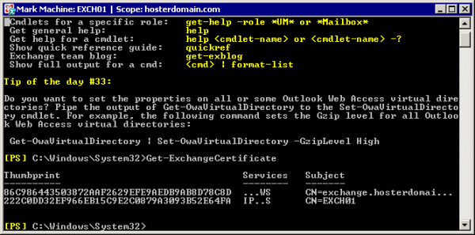
3.1.5. Find your newly imported certificate. In our example it's a certificate with "exchange.hosterdomain.com" friendly name and "86C986443503872AAF2629EFE9AEDB9AB8D78C8D" thumbprint" value.
3.1.6. Replace existing self-signed certificate for Default Web Site with new commercial certificate using Exchange Management Shell
Perform it according to http://technet.microsoft.com/en-us/library/aa997231.aspx article
Enable-ExchangeCertificate -Thumbprint '86C986443503872AAF2629EFE9AEDB9AB8D78C8D' -Services IIS
Please note that via "command-let" you should enable only "IIS" service and it will be enough for replacing of existing self-signed certificate. Enabling of IMAP, POP, SMTP services is optional and depends on your current configuration.
3.1.7. On Windows 2003 Server: Open Internet Information Services (IIS) Manager > Web Sites > Default Web Site properties > Directory Security > View Certificate and ensure that new certificate was successfully installed
On Windows 2008 Server: Open Internet Information Services (IIS) Manager > Sites > Default Web Site properties > Actions pane > Bindings > Press edit HTTPS Binding and ensure that new certificate was successfully installed
3.2. Configure the URLs for Exchange services according to http://technet.microsoft.com/en-us/library/bb201695.aspx
3.2.1. To use the Exchange Management Shell to configure the external host name for Outlook Anywhere for the Autodiscover service.
Exchange 2007:
Enable-OutlookAnywhere -Server exch01 -ExternalHostname "exchange.hosterdomain.com" -ExternalAuthenticationMethod "Basic" -SSLOffloading:$False
Exchange 2007 SP1 and Exchange 2010:
Enable-OutlookAnywhere -Server exch01 -ExternalHostname "exchange.hosterdomain.com" -DefaultAuthenticationMethod "Basic" -SSLOffloading:$False
3.2.2. To use the Exchange Management Shell to configure the external URL for the offline address book for the Autodiscover service.
No need to run this cmdlet in case you specify correct external FQDN on "Configure Client Access Server external domain" page when you deploy Exchange 2010 on this server.
Set-OABVirtualDirectory -identity "exch01\OAB (Default Web Site)" -externalurl https://exchange.hosterdomain.com/OAB -RequireSSL:$true
3.2.3. To use the Exchange Management Shell to configure the external URL for Exchange Web Services for the Autodiscover service.
No need to run this cmdlet in case you specify correct external FQDN on "Configure Client Access Server external domain" page when you deploy Exchange 2010 on this server.
Set-WebServicesVirtualDirectory -identity "exch01\EWS (Default Web Site)" -externalurl https://exchange.hosterdomain.com/EWS/Exchange.asmx -BasicAuthentication:$True
3.3. Configure the service connection point object
Set-ClientAccessServer -id exch01 -AutoDiscoverServiceInternalUri https://exchange.hosterdomain.com/autodiscover/autodiscover.xml
3.4. Configure Exchange ActiveSync Autodiscover Settings according to http://technet.microsoft.com/en-us/library/aa998277(EXCHG.80).aspx or http://technet.microsoft.com/en-us/library/aa998277.aspx
No need to run this cmdlet in case you specify correct external FQDN on "Configure Client Access Server external domain" page when you deploy Exchange 2010 on this server.
Set-ActiveSyncVirtualDirectory -Identity "exch01\Microsoft-Server-ActiveSync (Default Web Site)" -ExternalURL "https://exchange.hosterdomain.com/Microsoft-Server-ActiveSync"
3.5. Configure the IP address for the default Web site. Configure Default Web Site to use one IP address, not "all Unassigned". This address should not be used nether by OWA redirect site, no by Autodiscover redirect site which we will create in next steps.
Note that after this step you may have problems with opening EMC/EMS. Please check it and in case this issue appear, add the following records to hosts file:
10.0.0.1 exch01.hosterdomain.local
10.0.0.1 exch01
Where:
exch01.hosterdomain.local - internal FQDN of this server
10.0.0.1 - IP address you set for Default Website Bindings.
Alternative way may be deploring Autodiscover redirect website on some another, non-Exchange server. It is not mandatory to be deployed on Exchange server, as it is just HTTP redirect. However this site should have dedicated IP and does not use host headers anyway.
3.6. Create a new Web site in IIS and Autodiscover redirect and configure the new Web site
3.6.1. Windows Server 2003:
3.6.1.1. Create new website, name it "Autodiscover redirect"
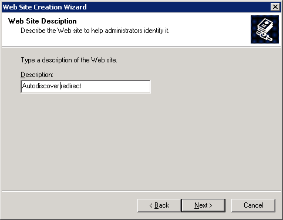
3.6.1.2. Use IP address you got in step 1 (which does not used for Default Web Site and OWA redirect site), port 80. Don't use host headers
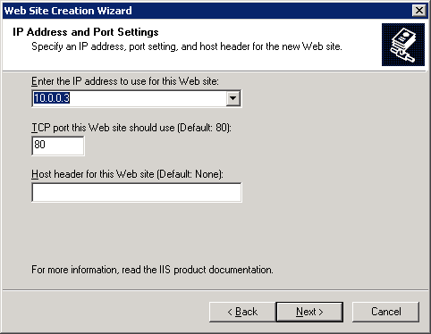
3.6.1.3. Create C:\Inetpub\ Autodiscover_redirect directory and use it for this site home directory
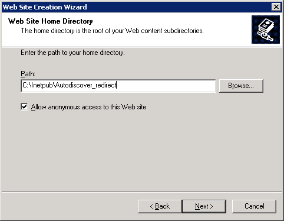
3.6.1.4. Accept all other default setting of new web site creation wizard
3.6.1.5. Open HTTP (TCP port 80) to this IP from outside, if you use NAT-based port mapping/publishing
3.6.1.6. Create the Autodiscover redirect. Do steps according to Microsoft documentation: "Use Windows Explorer to locate the folder that you created named Autodiscover_redirect. Create a new folder named Autodiscover in the Autodiscover redirect folder, and then use a text editor to create a new blank text file that has the name Autodiscover.xml in the Autodiscover folder."
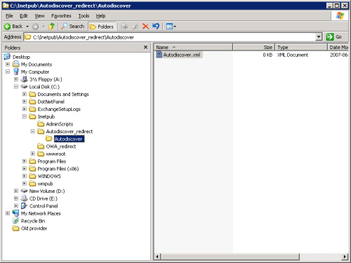
Just change mail.contoso.com to your URL, https://exchange.hosterdomain.com/autodiscover/autodiscover.xml in our example.
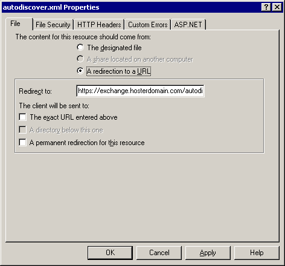
3.6.2. Windows Server 2008:
3.6.2.1. Create C:\Inetpub\Autodiscover_redirect directory and use it for this site home directory. Use IP address you got in step 1 (which does not used for Default Web Site and OWA redirect site), port 80. Don't use host headers
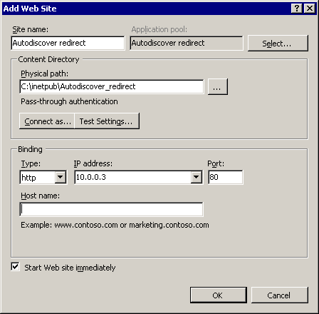
3.6.2.2. Create the Autodiscover redirect. Do steps according to Microsoft documentation: "Use Windows Explorer to locate the folder that you created named Autodiscover_redirect. Create a new folder named Autodiscover in the Autodiscover redirect folder, and then use a text editor to create a new blank text file that has the name Autodiscover.xml in the Autodiscover folder."
3.6.2.3. In IIS Manager, under "Autodiscover redirect" website > Autodiscover folder that you created, click on autodiscover.xml file .
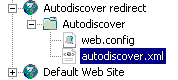
3.6.2.4. Then click HTTP Features > HTTP Redirect feature settings.
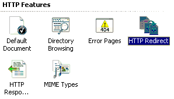
3.6.2.5. On the Properties page, select "Redirect request to this destination", and then enter the same information that you used to configure the SCP object. For example, https://mail.contoso.com/autodiscover/autodiscover.xml." Just change mail.contoso.com to your URL, https://exchange.hosterdomain.com/autodiscover/autodiscover.xml in our example.
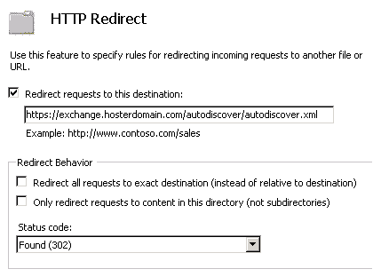
3.6.2.6. Open HTTP (TCP port 80) to this IP from outside, if you use NAT-based port mapping/publishing
4. DNS configuration and CNAME records creation automation in WSP.
4.1. Create A record for autodiscoverredirect in your hosting company DNS zone.
autodiscoverredirect.hosterdomain.com A 10.0.0.3.
Such a record cannot exist in real internet DNS. It is just example. Use IP address of "Autodiscover redirect" site if your Exchange Client Access Server is directly connected to the Internet, or external IP address of NAT device which maps TCP 80 to "Autodiscover redirect" site IP.
4.2. Add CNANE record to Exchange 2007 service DNS template in WSP.
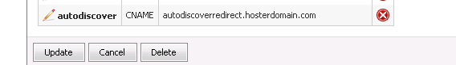
5. Test creation DNS records and Autodiscover redirect work.
5.1. Create new Exchange organization with WSP
5.2. Ensure that Autodiscover CNAME created
5.3. Create user in new Exchange organization
5.4. Try to connect to Exchange server using Outlook 2007 with Autodiscover.
6. Additional notes:
6.1. You may get error while trying to connect to Exchange server using Outlook 2007 with Autodiscover:
The action cannot be completed. The connection to Microsoft Exchange is unavailable. Outlook must be online or connected to complete this action
In this case run iisreset in command prompt and Restart Exchange services on Client Access Server or even reboot Client Access Server and then try to connect to Exchange server using Outlook 2007 with Autodiscover again.
6.2. If you do not host clients DNS zones and do not manage them by WSP - instruct your clients how to create appropriate records manually.
6.3. You can use anything you want instead of "exchange" in URLs, shell commands and SSL certificate. For example - mail, webmail, etc.
6.4. Very useful link to test those things https://www.testexchangeconnectivity.com/
6.5. Very useful link for troubleshooting http://technet.microsoft.com/en-us/library/cc411322(EXCHG.80).aspx
6.6. Very useful link for in-depth understanding http://msexchangeteam.com/archive/2008/06/20/449053.aspx